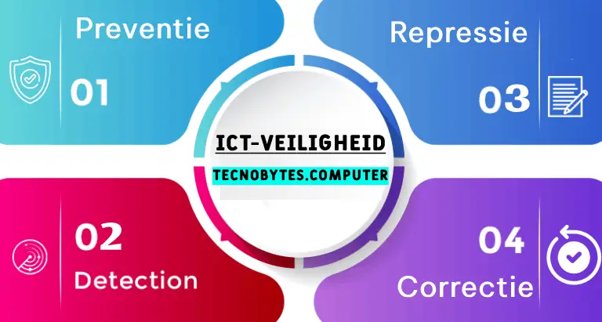
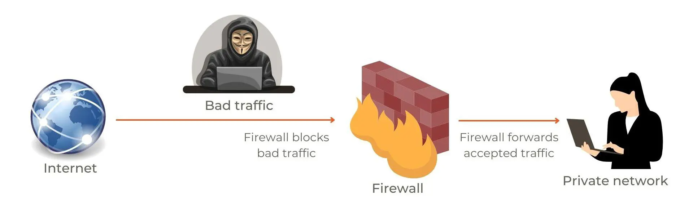

Stappen die je moet ondernemen om te voorkomen gehacked te worden
Maatregelen Om de veiligheid van ICT-systemen in stand te houden, kunnen de makers en gebruikers verschillende maatregelen aannemen om dit doel te voltooien. Deze maatregelen kun je verdelen in vier soorten: preventie, detectie, repressie en correctie. Preventie Preventieve beveiligingsmaatregelen zijn maatregelen die worden genomen om problemen te voorkomen. Deze maatregelen bestaan voor beiden hardware en software. De hardware moet veilig worden gemaakt en de software moet up-to-date blijven. Naast dat de hackers een zo klein mogelijke kans moeten hebben, moeten de gebruikers wel makkelijk toegang krijgen, dus goede authenticatie is essentieel. Toch moeten de manieren van toegang alleen noodzakelijk zijn en tot een absoluut minimum worden gehouden, want hoe meer manieren van toegang, hoe meer zwakheden er zijn. Andere belangrijke preventieve beveiligingsmaatregelen zijn encryptie en regelmatig back-ups maken. Detectie Helaas is software niet perfect, daardoor zullen er altijd kwetsbaarheden bestaan, waar misbruikt van gemaakt kan worden. Dit is de reden waarom detectie bestaat. Detectie zorgt voor de controle op misbruik. Een hulpmiddel voor detectie is de firewall. De firewall scant al het binnenkomende netwerkverkeer en controleert het netwerkverkeer op kwaadaardige gegevens. Naast de firewall is er nog een tweede detectiehulpmiddel de anti-malwaresoftware. De anti-malwaresoftware scant het apparaat en zoekt naar malware en als de software malware vindt verwijdert het deze. Repressie en correctie Als er malware is aangetroffen of een aanval, moeten er maatregelen worden genomen: de repressie. Ook moet de eventuele schade worden gerepareerd: de correctie. Welke maatregelen er genomen moeten worden ligt aan de soort aanval. Soms is anti-malwaresoftware genoeg, maar soms kunnen ook hele servers uitvallen.

Encryptie
Symmetrische encryptie
encryptie is het versleutelen van een tekst Dit kan je bijvoorbeeld doen door iedere letter uit je tekst te vervangen door de letter die daarna komt in het alfabet. Dat je dit iedere keer doet, wordt een algoritme genoemd. De hoeveelheid letters naar voor of naar achter schuift noem je de sleutel. Aanvallers proberen de encryptie te breken en het te lezen zonder sleutel. Verdedigers kunnen twee manieren toepassen om encryptie veiliger te maken: Ze kunnen de sleutel moeilijker maken waardoor het meer tijd kost om te vinden en het dus niet waard is. Ze kunnen het algoritme verbeteren, waardoor het moeilijker te kraken wordt. Encryptie die 1 sleutel gebruikt het symmetrische encryptie.Asymmetrische encryptie
Symmetrische encryptie werkt alleen als de data niet getransporteerd hoeft te worden. Als je het wel zou transporteren zou je de sleutel ook moeten versturen, waardoor het onderschept zou kunnen worden. Om deze reden is asymmetrische encryptie (ook wel Public key encryptie) bedacht. Bij asymmetrische encryptie heeft iedere gebruiker 2 sleutels: de publieke sleutel en de geheime sleutel. Met de publieke sleutel wordt het bericht versleuteld en met de geheime sleutel weer ontsleuteld. Als er een bericht verstuurd wordt, gebruikt de verzender de publieke sleutel van de ontvanger om het bericht te versleutelen. Vervolgens wordt het bericht gestuurd naar de ontvanger, waar het weer ontsleuteld wordt met behulp van zijn geheime sleutel.